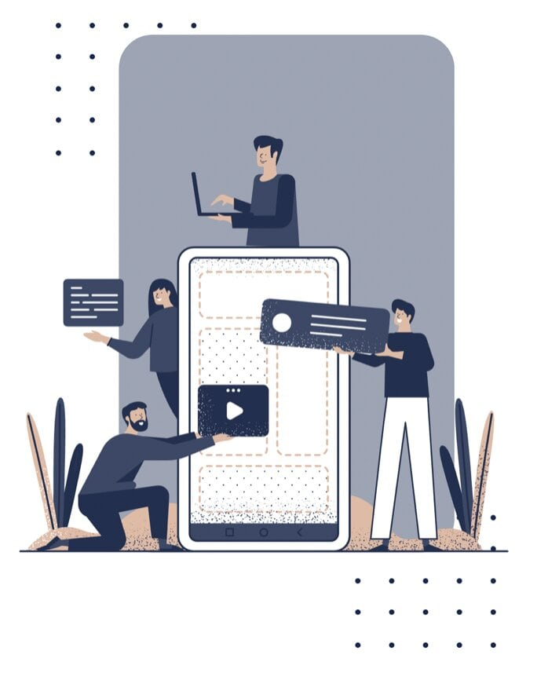

Qui suis-je ?

Moi c’est Romane ! Étudiante en Master 1 Marketing Digital & Innovation à l’IESEG, je travaille en alternance dans le domaine de la cybersécurité pour un groupe bancaire. Pendant le confinement, je me suis lancée dans la folle aventure qu’est l’entreprenariat en devenant Social Media Manager en freelance. Jeune demoiselle 2.0, mes cours en école de commerce et mes stages, m’ont permis d’acquérir des compétences et de l’expérience en social media management. J'accompagne quotidiennement des entreprises et entrepreneurs dans la gestion de leurs réseaux sociaux afin de promouvoir et développer leurs activités en ligne.

Besoin d'aide sur les réseaux sociaux ?
• Stratégie Social Media
Je vous aide à atteindre vos objectifs à moyen ou long terme via une communication sur-mesure.
• Gestion & Animation
Je vous accompagne au quotidien dans la gestion et l'animation de votre page Facebook, et de votre compte Instagram professionnel.
• Publicités
Je créé et gère vos publicités sur Facebook et Instagram afin de vous aider à accroître votre visibilité et à gagner en notoriété.
• Création & Design
Création et conception de contenus et supports graphiques attractifs pour vos réseaux sociaux en parfaite adéquation avec votre marque.
• Copywriting
Vous avez besoin d'aide dans la rédaction de vos supports de communication ou souhaitez une simple relecture de vos écrits ? Je vous accompagne pour toutes vos demandes de copywriting.
• Audit & Conseil
Besoin d'un avis extérieur sur tout aspect relatif à votre communication, vos réseaux sociaux ou vos supports papiers ? Je réalise un audit selon votre demande et vous remet une liste de pistes d'amélioration afin d'avoir un avis extérieur sur tout aspect relatif à votre communication.
Le Community Management, ça ne s'improvise pas.
De nos jours, le marketing digital occupe une place de plus en plus importante dans la communication et sa croissance ne va pas s’arrêter en si bon chemin. Le comportement des consommateurs a changé au fil du temps : ils s’informent plus sur les produits et les sociétés avant d’acheter. Il est donc indispensable, pour les entreprises qui ne l’aurait pas encore fait, de pouvoir intégrer une stratégie médias sociaux dans leur communication et de définir qui va s’en charger